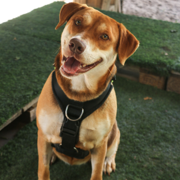
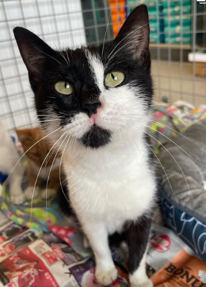
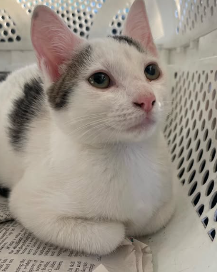

Animal Rescue
We help rescue abandoned, neglected and injured animals that need care and protection.
Cape Town Paws rescues, rehabilitates and helps abandoned, neglected and injured animals find safe and loving homes.
Cape Town Paws is a non-profit animal rescue organisation based in Cape Town. We help animals in need through rescue, rehabilitation, adoption and community support.

We help rescue abandoned, neglected and injured animals that need care and protection.

Rescued animals receive care and support while preparing for a safe and healthy future.

We help animals find responsible and loving families where they can feel safe.
Support Cape Town Paws through adoption, fostering, volunteering or donations.
Get Involved